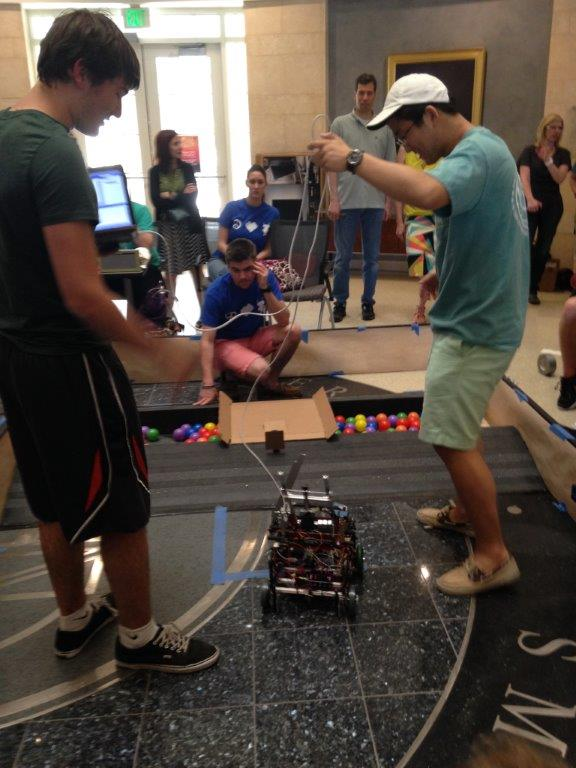
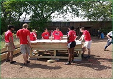

-

- 
Welcome to the Hart Leadership and Career Development Portal
The Hart Center for Engineering Leadership strives to shape you into exceptionally successful engineers. The Hart Center's assessment, challenge, and support approach to leadership development helps prepare you for the real business of engineering, by giving you the tools you need for the college to career transition and encouraging lifelong personal and professional growth. The Hart Leadership and Career Development Portal serves as your personal learning and action plan platform. The portal includes your assessment, leadership development action plan and progress as well as career planning tools.
 My Leadership
My Leadership
 Competency Library
Competency Library